Suivez
Open Projets
sur LinkedIn
Vous y trouverez les nouveautés de nos outils et nos conseils pour informer vos habitants des projets et des chantiers de votre territoire.
- Flashez ce code avec l’appareil photo de votre téléphone.
- Appuyez sur le lien qui s’affiche, puis sur « Suivre ».
Ou tapez l’adresse linkedin.com/showcase/openprojets dans votre navigateur.